A genocidal militia was coming for his city. He was one of the last doctors left
The untold story of the last hospital in el-Fasher
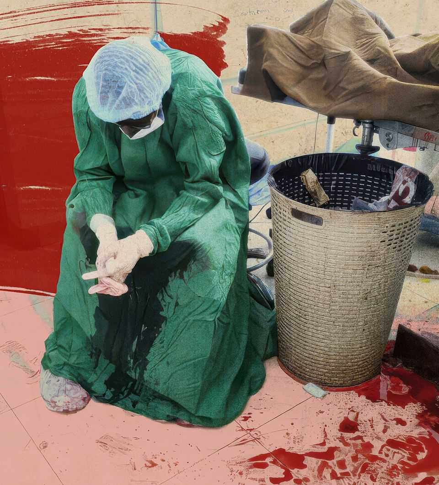
Oct 22nd 2026
The woman spoke in a whisper. “You’re the doctor. I know you.” Adam could barely hear her over the babble of the other captives. Militiamen had seized them as they fled the slaughter; now they were trapped in a disused school on the edge of the Sudanese desert. The woman was one of the locals let in to sell peanuts.
Until she spoke, Adam had been in a kind of trance. When the city fell in October 2025, he was already weak from the months-long siege. All he’d been given to eat in the two weeks since were a few mouthfuls of flatbread a day. As his body shut down, the past and present blurred. He day-dreamed about the last days of el-Fasher: joking with friends at the hospital; his dog, Bulldoze, padding behind him as he walked through the wards; the screams when the militia finally overran the city’s defences.
The woman leaned closer, her headscarf slipping forwards. “You’re the doctor,” she repeated. “From Saudi hospital.”
Suddenly Adam was alert. Fighters from the Rapid Support Forces (RSF), the militia that had captured him, were hunting down doctors. Hospital staff had evidence of the atrocities they had committed since they began fighting the Sudanese army in 2023; some doctors, like Adam, had spoken publicly about them.
When Adam was first taken captive on the road out of el-Fasher, he’d been held under the scorching sun with thousands of others, and had watched RSF fighters search the crowds for people they considered enemies. They grabbed prisoners at random and shouted, “Where are the soldiers? Where are the doctors?” as they punched and kicked.
The gunmen offered to let people go free if they informed on wanted men. Sometimes they snatched captives’ phones and searched them for incriminating material. Adam, who had left his phone at the hospital and shaved off his beard, managed to avoid discovery. Others weren’t so lucky. Several times he saw a fighter pull a man from the crowd and drag him behind the nearby trees. After a burst of shots, the fighter would come back alone.
For all he knew the woman before him could be an RSF informant. “Sorry, you’re mistaken,” he told her politely. She moved on.
A few days later she was back. She asked him again if he was the doctor, and he denied it a second time. He wasn’t sure he should have. He needed a friend. The only way out seemed to be to get a family member to pay a ransom to the RSF, but Adam had no way of contacting anyone.
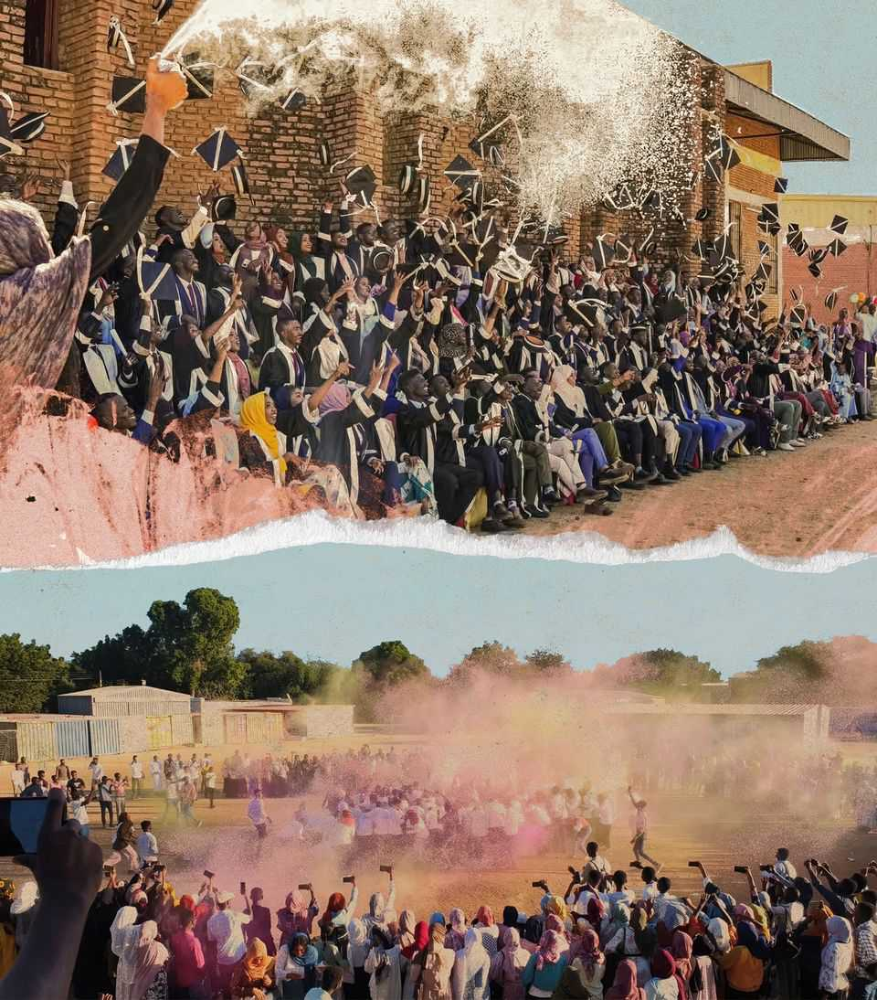
In theory he could have escaped, as the school wasn’t heavily guarded. But the desert sands stretched all around him; he’d die of thirst without help. Someone might have mercy on him if he ran into the nearby village. But they might also report him to the RSF.
Later, the woman tried a third time. “I know you,” she insisted. “You helped my sister.”
Adam thought about his parents, who had escaped to safety, and his friends. He longed to see them again. With a deep sigh, he commended his life to God and leaned in close.
“Yes,” he admitted. “I’m the doctor.”
RSF forces stormed el-Fasher on October 26th 2025, briefly putting Sudan’s civil war on front pages. Humanitarians and diplomats had been warning for months that the RSF’s capture of the city, the last stronghold of the Sudanese army in the Darfur region, would lead to a bloodbath.
The events that followed were only sparsely documented. Internet and phone signals were down, and those who survived often had their phones stolen. Researchers relied on satellite imagery to quantify the scale of the killing. The UN later concluded that it bore the “hallmarks of a genocide”. A year after its fall to the RSF, investigators are still working out how a city that once housed a million people was emptied. El-Fasher has yet to gain the name recognition of other sites of modern-day massacres, such as Srebrenica.
Adam had a happy childhood there, even during the previous civil war. A rebellion in Darfur broke out in 2003 when Adam was six, the result of decades of neglect by the corrupt, authoritarian government in Khartoum. When armed rebels, drawn from the region’s African ethnic groups, attacked military bases, the Arab-dominated regime in the capital retaliated against the rebels’ communities. Warplanes bombed villages, burning families alive. The Janjaweed, a feared Arab militia, were sent in. They looted, gang-raped women, and bludgeoned children to death.
But these horrors impinged only tangentially on Adam’s life in el-Fasher. For centuries, the city had been a hub on trans-Saharan caravan routes linking north, central and east Africa, and it retained its cosmopolitan roots. Children from different African ethnic groups as well as pupils with Arab roots studied together at Adam’s primary school. His classmates sometimes relayed gossip they’d overheard about bands of marauders in the countryside, but Adam was more interested in talking about football and anime series, like “Detective Conan”.
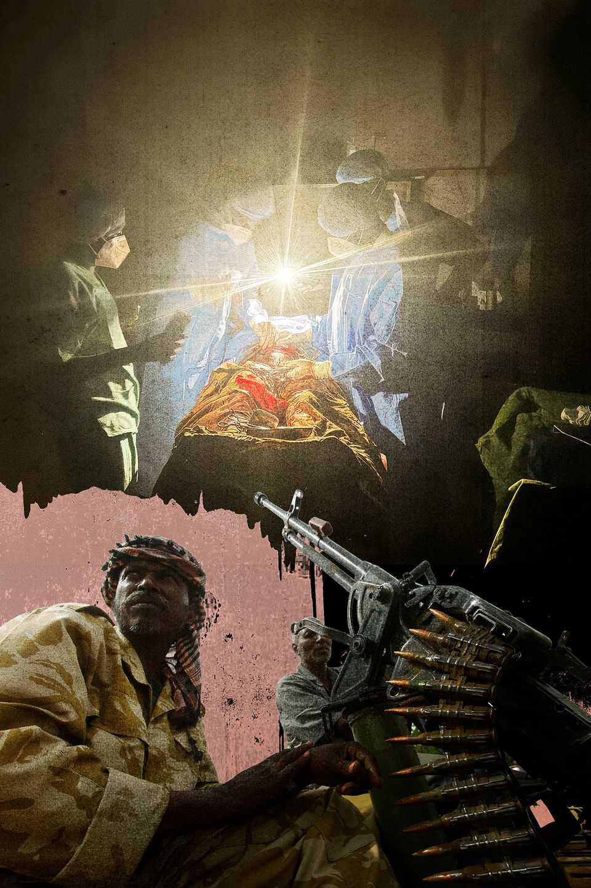
Eventually a series of truces, together with the deployment of an armed peacekeeping force, tamped down the violence in Darfur. As Adam got older, he noticed things he’d overlooked as a young child: the refugee camp on the edge of the city; the portraits of the president, Omar al-Bashir, looking down from the walls of shops; the fact that no one would talk about politics in public.
For him and his family at least, life was good. His parents both had decent jobs, and he and his two sisters grew up in a spacious house with a garden. Even as a child, Adam knew that he wanted to help people, so he studied hard in science in the hope of one day becoming a doctor.
On special occasions, the family went out for dinner at shisha bars illuminated by lights strung between the trees like glowing cobwebs. Sometimes Adam’s father took him for coffee in el-Fasher’s main market, where the shops glittered with bangles made from gold mined in south Darfur.
By the time Adam started studying medicine at el-Fasher university in 2014, the economy was crumbling. The Bashir regime’s dysfunction had helped create a surge in food and fuel prices. Critics were disappearing. Protesters around the country began demanding Bashir’s resignation; Adam helped organise demonstrations at the university. He and his fellow students were teargassed, beaten and sometimes jailed. In April 2019, after months of popular revolt, Bashir’s security chiefs forced him to step down.
A fledgling transitional government took charge with the backing of the two main powerbrokers in the country: the Sudanese army and the RSF, the official paramilitary organisation that had emerged from the Janjaweed. For the first time in Adam’s life, peace and democracy seemed within reach. Adam and his fellow students would stay up late chatting about their dreams for a new country.
Then in 2021, the army and the RSF overthrew the civilian government in a coup. Adam was deep in his studies by then, and struggled to juggle exam preparation with participating in pro-democracy protests. Classes were often cancThe aftermath of an attack on the World Food Programme’s offices. Saudi hospital’s obstetrics clinic (clockwise from top left)elled owing to the tumult. But eventually, towards the end of 2022, he graduated.
His proud father hosted a barbeque for their family and friends; guests sipped sweet, sticky glasses of ruby-red hibiscus juice while frankincense smoke curled through the evening air. Afterwards Adam and the other graduates zoomed around town, cheering loudly and hooting their car horns.
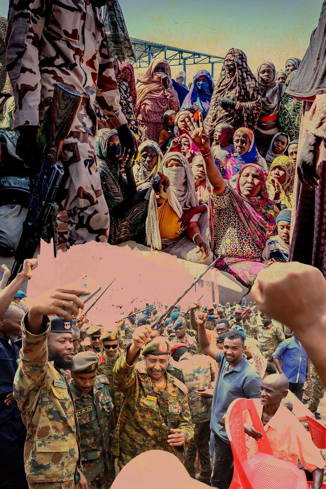
The next week he started work at el-Fasher’s teaching hospital. Later, he’d marvel at how cosseted he was there. One of the hospital’s 30 consultants was always there to give him advice. When he had to tell a young woman she had cancer, older staff counselled him on how to break the news gently.
On the morning of April 15th 2023 Adam was at home getting ready for a shift when his phone buzzed and he looked down. He didn’t know it at the time, but it was the moment his old life ended.
Wassim, a 25-year-old laboratory technician who would later become one of Adam’s closest friends, was at the teaching hospital when the news broke. He had recently graduated, and had brought his CV to the hospital seeking an internship. As he waited he heard the crack of gunshots outside, but assumed it was just another protest being dispersed. Within half an hour, bloodied civilians began stumbling in. Hospital staff triaged them while shouting out the updates flashing on their phones. Gunmen were fighting near the military barracks a few streets away. The RSF and the army were at war.
Staff and patients fled the building. Two other hospitals caught up in the fighting also had to close. Along with other doctors, nurses and support staff, Adam made his way to South hospital, then the only one operating.
The next few days were chaos, with casualties piling up and the hospital stretched beyond its limits. Fortunately, the Sudanese are used to handling crises without any help from the state. The network of volunteers that had helped organise pro-democracy demonstrations became an emergency-response force: mending, scrubbing and scrounging for supplies to keep the hospital working. Wassim, his internship application long forgotten, joined in.
One of the most prominent figures in the network was Abdullah, a graduate in management studies. Abdullah and Adam were university friends, and had sometimes marched in the same protests. Abdullah’s easy manner and confidence meant he was often called on to give speeches at community events, and he was well-known even before the war. Once it started, he got to work asking people for money and medicine on behalf of the hospital.
Sometimes there was a pretty young woman at the hospital, who caught Abdullah’s attention. Aisha, an economics graduate, had been visiting an ailing relative when the war broke out and then pitched in to assist with the volunteer effort. She helped Abdullah look after a mentally ill man who had been injured, and later they distributed medicines together. Abdullah was drawn to her spirit and grit.
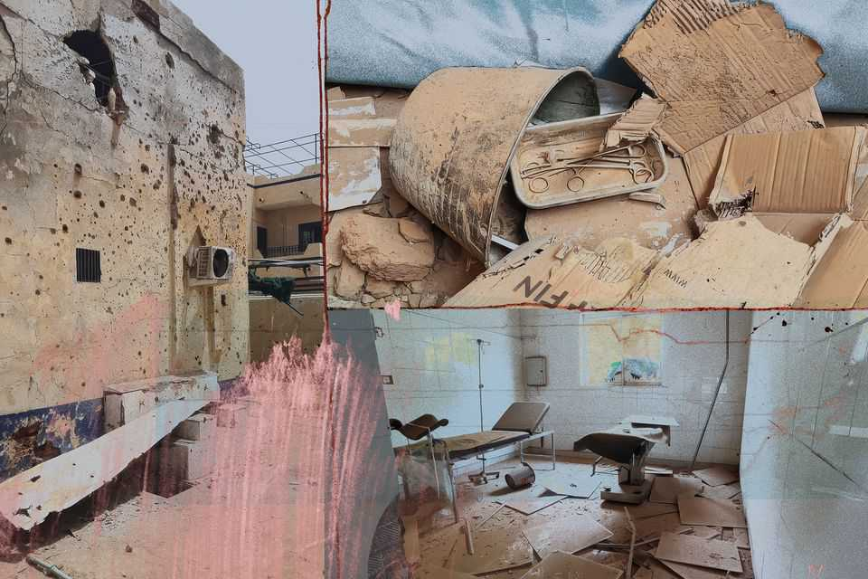
Adam, too, threw himself into the collective effort, sometimes joining Wassim for night-time raids on abandoned hospitals in search of supplies. He decided he was most needed at the Saudi maternity hospital (or “Saudi”, as everyone called it), which had reopened two weeks after the start of the war. Other doctors and volunteers began splitting their time between Saudi and South.
For a few months it looked as though el-Fasher might be spared the worst of the conflict ravaging other parts of Sudan. The governor of Darfur, Minni Minnawi, was a former rebel leader. His fighters had been at war with both the Sudanese army and the RSF’s predecessor, the Janjaweed, for years, and trusted neither. Shortly after the fighting broke out, Minnawi declared his forces’ neutrality. Instead of becoming a battle site, el-Fasher was divided into zones of influence.
Minnawi’s men held a buffer zone in the centre. The RSF held the east. The Sudanese Armed Forces (SAF) held the west and parts of the south, where South and Saudi hospitals were located. Like most people, Adam and Wassim knew fighters in all three groups. The city was tense, but it functioned.
Then in November 2023, Minnawi announced that he was going to fight alongside the Sudanese armed forces, citing RSF atrocities. Panic gripped el-Fasher. Families strapped bulging suitcases onto cars and fled. One night Saudi’s senior medical director called Adam. They’d worked closely together, and he wanted to tell Adam himself that he was leaving.
Then came the kicker: he asked Adam to take over his responsibilities, alongside two other people. Saudi had a staff of 400, and was the only specialist maternity hospital in Darfur, a region of 12m people. Adam was ten months out of medical school.
That night he lay awake for hours, his mind churning. Would the older staff accept him? Where should he start? He began compiling lists of available staff in his head.
He awoke feeling calmer. There was no point trying to fake authority. He had to earn trust by being humble: cleaning the floors himself and leaning on his more experienced colleagues. Rather than make a big speech, he met staff individually. “You are the real leaders of the hospital,” he told them.
He was particularly reliant on the hospital’s middle-aged administrative director, Mahasin, who was a surrogate mother to the younger staff. She ticked them off over behaviour she considered risky, such as leaving the hospital for coffee or parties, and cooked up enormous vats of food for them.
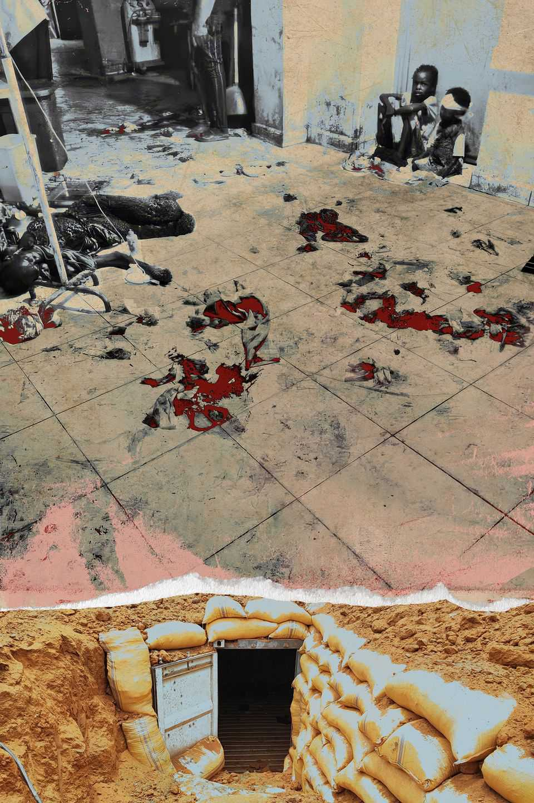
The hospital was Adam’s home now. He moved in with some essential belongings, including Bulldoze. A few months later fighting reached the neighbourhood where his family lived. His parents and sisters decided to flee, packing only a few bags of clothes and Adam’s degree certificate. He escorted them to the city gates in the morning, hugged them, then went back to work. He found it hard to concentrate on anything until they called that evening to say they had made it out safely.
As the RSF seized town after town in Darfur, reports of atrocities mounted. Adam’s mother begged him to flee himself. In November the RSF captured el-Geneina, a city 300km west of el-Fasher. Civilians from the tribes fighting the RSF were executed; some were tortured to death. Those who tried to escape were shot. If they did that to el-Geneina, his mother said, what did he think the RSF would do in el-Fasher, the centre of resistance?
After several of these entreaties, Adam snapped. He told his mother he was already dead. “Consider that I have given my life to this city,” he said. “Consider me a martyr.”
They spoke most days, but she never brought up the subject of him leaving again.
The war sometimes got to Adam. He took care to hide black moods from his colleagues. Often the only place he could find solitude was in the operating room, where he’d lean against the walls and brood in the antiseptic dark.
Small victories buoyed him, such as the time his team was able to save a baby who had been shot in its mother’s womb. But the injuries were becoming worse as both sides’ weapons got more powerful. When the war first broke out, Adam and his colleagues had mainly treated people for bullet wounds. But then both sides obtained more sophisticated equipment, including drones. Though the RSF tried to keep their foreign benefactors a secret, an overwhelming body of evidence pointed to the UAE (the UAE denies the accusation). By the summer of 2024, people were arriving at Saudi eviscerated, or with limbs sliced off.
One day in June 2024 about 50 wounded people arrived at Saudi within half an hour. Many were women and children with gaping shrapnel wounds. Adam ran to help with triage when someone yelled: “South hospital has been overrun by the RSF!”
He refused to believe it at first. So many of his friends were working there. Then he froze as he noticed how dirty and tired the new arrivals looked: they had run the 5km distance between the two hospitals. The rumour was true.
Over the next few days, staff from South hospital limped in. Many had scaled the hospital walls under fire to escape. Among them was the director-general of the facility, who had been beaten, stabbed in the face and left for dead.
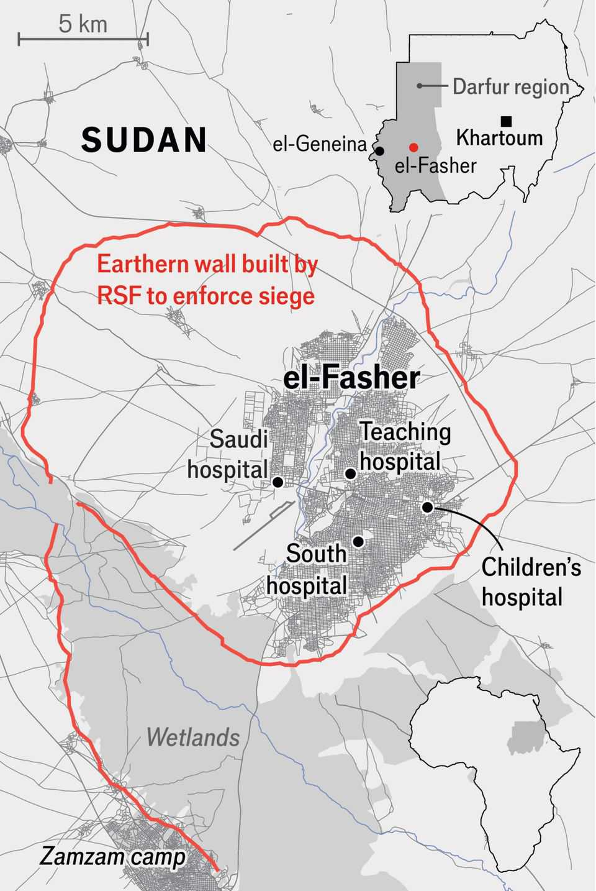
The staff didn’t know what happened after they fled, but they found out a few days later when a team was briefly able to re-enter. Some patients were shot in their beds; the bodies of their relatives lay sprawled in the lobby. A handful of survivors said the RSF had rounded up men of military age. Saudi was now the last functioning hospital in the city.
They got used to the sounds of drones overhead. The smaller ones whined; the bigger, military-grade ones sounded like small planes. Sometimes quadrocopters hovered for hours, blades whirring, before releasing a bomb.
Adam managed to get hold of some shipping containers, and the team buried them to use as bomb shelters. But there were no sirens to alert them to attacks, and often people didn’t make it to the shelter in time. Amna, a pharmacist with a penchant for romance novels who had joined them after escaping South hospital, was killed in a direct hit on Saudi’s pharmacy.
Soon Adam gave up trying to run to the shelter when the bombs fell. Ignoring Mahasin’s scolding, he would enjoy his coffee in the sunshine instead, with Bulldoze by his side.
“No one cared any more,” Adam recalled. “You would hear a bomb hit the hospital and just shrug.”
Once a ward was hit in the middle of the night. Adam ran into the darkness, guided by screams. Then he heard a drone loitering above. Second strikes were common if there was a sign of life, so Adam couldn’t switch on his torch. In the darkness, a young boy clutched his leg and begged him, “Uncle, save me!” But he couldn’t help anyone without light. For hours, the screaming continued, then slowly subsided. Around 70 people died.
The hospital was targeted so often that the staff set up operating theatres and emergency rooms in abandoned buildings. But it didn’t make them much safer: the drones just tracked the wounded to these secret outposts, and attacked them too.
In spite of the risks, hundreds of people—patients, doctors, staff from other hospitals and their families— moved into Saudi hospital. Nowhere in the city was safe; at least in Saudi they had each other. Room Three, where Adam and his friends lived, was the hospital’s beating heart. It had only four beds, but more than a dozen people would crash there at a time.
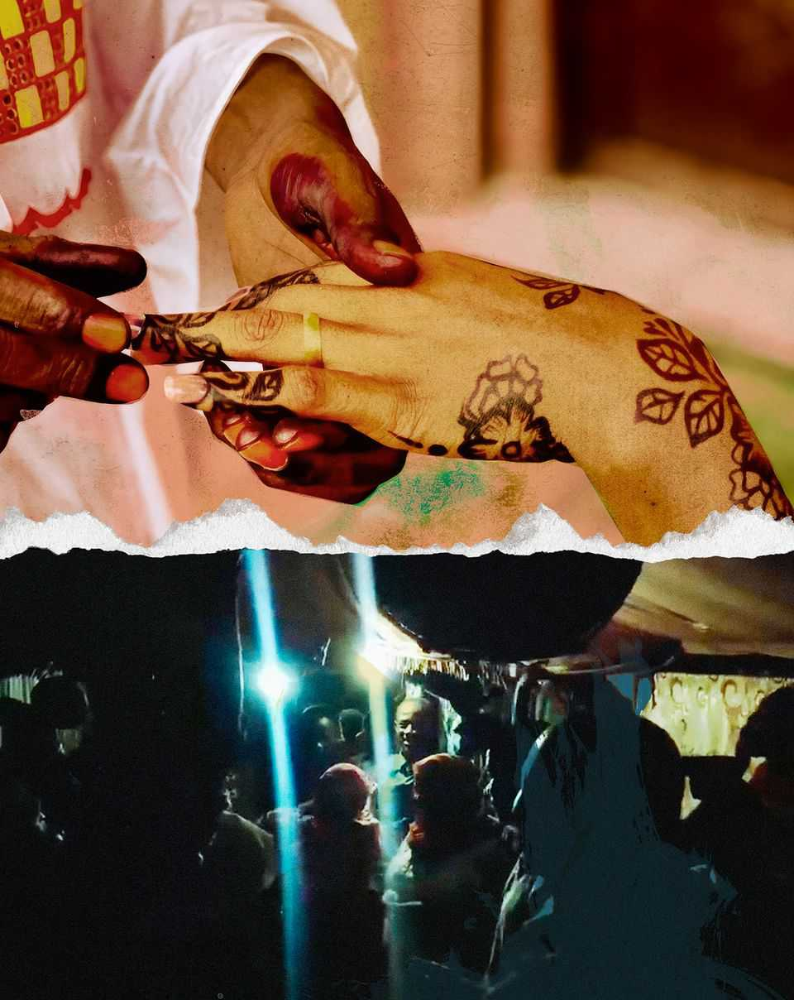
People didn’t come just to sleep. Room Three was where they went when they were feeling hopeless and alone. Room Three was life. “In Room Three someone was always dancing, someone was always singing,” one surgeon told me later. “Someone was farting.”
Room Three was also directly opposite Room Four, where some of the young female staff slept. Inhabitants of both rooms rolled out mats in the corridor between them, and chatted there over coffee and music. Sometimes they fell in love with each other: there was a spate of marriages between doctors, lab technicians, nurses and pharmacists.
The love story that gripped the hospital was that of the two volunteers: Abdullah and Aisha. Abdullah was a great favourite with the hospital staff, as was his mother, Zeinab, who cooked for them. When Aisha’s family home was overrun by RSF fighters in 2024, she moved in with Zeinab. In January 2025 a stray bullet hit Zeinab in the chest. Before she died, she made Abdullah promise to take care of Aisha.
Abdullah and Aisha married a few months later. At the ceremony Abdullah asked for a moment’s silence for his mother. Everyone wept.
Then they threw a party in one of the damaged emergency rooms. Blue and purple balloons dangled from the walls and people danced to Sudanese love songs. The men threw their hands in the air while women sang along. “It was like there was no war,” Adam said. “We were not living like rats underground.”
Two days after Abdullah’s and Aisha’s wedding in April 2025, the RSF overran ZamZam, a camp for families displaced during the last war, which lay on the main road out of el-Fasher. The UN says at least 1,000 people were killed; the real number is probably much higher.
The camp had a medical clinic run by Relief International, an aid agency. Though other charities pulled out as the RSF approached, Relief International staff stayed at their posts. One of the doctors, 26-year-old Mahmoud Babikir Idris Adam, also worked shifts at the Saudi hospital. He had been one of the guests at Abdullah’s and Aisha’s wedding celebration.
When RSF fighters overran ZamZam they shot Mahmoud dead in his clinic, together with eight of his colleagues. Adam found out shortly afterwards. It was one of the only times in the war that he cried.
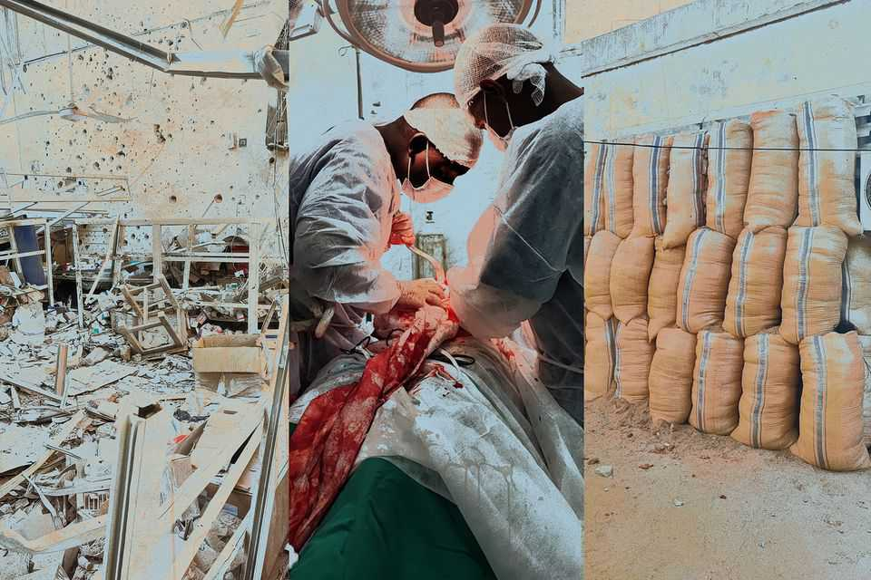
After ZamZam, el-Fasher was the RSF’s last significant target in Darfur. RSF soldiers began bulldozing earth into piles to make a barrier round the city. Most exit roads were blocked by RSF checkpoints, and the soldiers manning them were much less inclined to let people pass through for a bribe than they had been in the past. Now travellers were frequently raped, held for ransom or executed. Men of military age were especially at risk. The Yale Humanitarian Lab, which monitored the RSF’s barrier construction from space, described it as a “kill box”.
There was hardly anything to eat. By then, the hospital’s windows had all been blown out and replaced by sandbags. The medical staff tried to distract themselves. Adam obtained a PlayStation 5; between shifts he and the other staff lost themselves in “Grand Theft Auto”, “fifa” and “Assassin’s Creed”.
The men pooled their remaining supplies of cologne and swapped bottles of Sauvage and Baccarat for novelty. Adam contributed a heady scent called Rose Tobacco. His friend Yasir, who was also a doctor, instituted a weekly fashion ritual called “smart Tuesdays”. He and one of the volunteers would put on their most colourful clothes and take pictures of each other pulling model poses. If they were going to die, they said, they might as well be dressed for it.
There were other small comforts. A black-and-white cat came to the hospital; Yasir adopted it and named it c5 after the incoming RSF rockets. When Bulldoze came home after going missing for three days in August, Adam was so happy he gave the dog some of his precious rice.
Music was another balm. A song by Abdullah Alawad, a Sudanese singer with a white streak in his beard, became their anthem. Once Yasir used flour to whiten his own beard, and they recorded a cover version on their phones, bawling out the chorus together: “A person can die but their memory lives on.”
No one wanted to acknowledge the fear they all lived with. Wassim, the lab technician, felt suicidal some days. “My family was in danger, everyone around me was in danger, every morning a lot of people died. Children died of starvation,” he said when I met him much later. “I felt like it was better for me to die.” At his lowest point he confided in Adam. The doctor talked him round, promising that God saw their work and would not forget them.
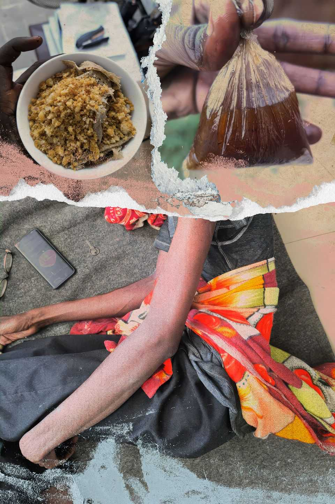
That summer, the staff’s resolve started to crumble. The bombardment was unrelenting, and roads out were getting more dangerous every day. Izzadin, one of the surgeons, watched as his operating team dwindled. A few asked him whether they should flee, but he refused to advise them. Some just stopped showing up; others came tearfully to say goodbye. Izzadin thanked them and gave them his blessing: “May Allah preserve you and help you reach a safe area.”
Wassim watched the other lab technicians leave. He was getting calls from a former classmate in the RSF, warning that the militia were about to seize the city and offering to get him out. The classmate spoke with contempt for those still in el-Fasher. He spat out a racist slur sometimes used to describe the dark-skinned people of Darfur: slaves.
“He called many times, saying ‘we are coming,’” said Wassim. Eventually, he blocked his old classmate’s number.
By the end of the summer, a kilo of rice, which fed a dozen medical staff for a day, cost more than $750. Sometimes surgeons would operate on an injured child and find his bowels full of leaves. Often all the staff had themselves was animal feed made out of crushed peanut waste. They re-used the same coffee grounds for weeks. Some doctors tied sheets around their stomachs to alleviate the stabs of starvation. Adam had weighed 88kg at the beginning of the war: now he was just 38kg.
Medical supplies were also scarce, and doctors were forced to use medicines that were several years out of date. The only remaining spinal anaesthesia had expired in 2021.
The RSF executed anyone caught smuggling medicine into the city, but some people did it anyway. One of them was an elderly man the Saudi team had operated on; he was frail but would walk three days across the desert to bring back supplies. After hearing the hospital was nearly out of anaesthetic, some women walked to a town 90km away to buy ketamine, which they smuggled back in their bras.
The doctors’ cheerfulness became their armour. When a new load of casualties arrived, Yasir would announce, “Life is beautiful!” before getting down to work.
But by September it had become hard to maintain. On September 19th a missile slammed into a mosque near the hospital. The imam was married to Mahasin, the hospital’s administrator, who rushed to the site. Her husband was badly injured and begged her to look for their two young sons in the rubble. By the time she found their bodies, her husband had died. She buried them all in their bedsheets and left the city with her teenage daughter.
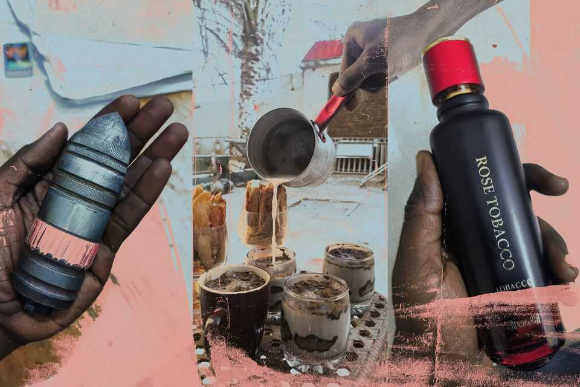
The hospital was down to two surgeons. Adam and his friends still didn’t want to go. If Saudi went unstaffed, most of the remaining population would leave and the city would be easy to capture. In any case, leaving was now as dangerous as staying. Yasir’s brother was killed at a roadblock trying to escape. A volunteer had left and was never heard from again.
By October everything was breaking. A bomb blasted a hole in the wall of the maternity ward that was big enough to walk through. There was an outbreak of cholera. On October 25th Abdullah decided he had to get Aisha, who was now pregnant, to safety.
They left with a group of other civilians. Among them was a man who had written social-media posts supporting the Sudanese army. An RSF fighter recognised him at a roadblock, and pulled his family aside. The soldier grabbed the man’s six-year-old son and cut the boy’s throat as he struggled and screamed for his mother. Then he released the man, telling him: “You couldn’t save your son. Go live with this pain.”
One of the RSF soldiers beckoned to Aisha. Abdullah stepped forward instead, meekly explaining that his wife was pregnant. To his surprise, the RSF soldier waved them through. “Go with my best wishes,” he told them. Abdullah looked the man in the face, astonished. It was the first time he’d seen evidence of humanity in an RSF fighter. He never forgot it.
That evening Adam and the remaining crew talked about whether they should follow Abdullah and Aisha out of el-Fasher. They were determined to live or die together, so they held a vote.
Adam, like the majority of them, voted to stay. It felt appalling to leave the patients to the RSF. But he sensed it would all be over soon no matter what he did. That night, as explosions shook the building, he walked through the hospital in the dark, saying a silent goodbye. He patted Bulldoze.
Ali, one of the last pharmacists, lay awake listening to the RSF artillery. In the early hours he fetched the others and told them they should vote again on leaving. “It’s the end,” he said. Reluctantly, Adam agreed.
It was shortly before sunrise. They had no plan—they just ran outside. All Adam took with him was a bottle of water and his Rose Tobacco. Terrified families filled the streets; mothers carried crying children. A few were riding donkeys but most were on foot. They were heading west, towards the city’s last collapsing defence.
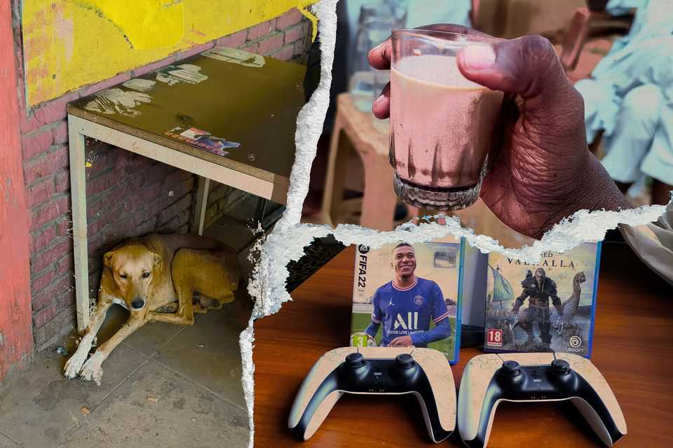
Behind them, giddy RSF fighters roared in from the south, east and north, looting and shooting. Crowds of people seeking refuge at the university were strafed and mortared. Families were forced to lie down at gunpoint and crushed with armoured vehicles.
Later, videos would emerge of an RSF commander gleefully murdering groups of unarmed people. He boasted that he had personally killed more than 2,000.
Adam and the rest of the hospital workers joined a flood of people heading west, but the RSF seized them on the road. In the chaos, Adam’s friends were put on trucks while he was marched to the abandoned school. For the first time since the siege began, he and his colleagues were separated.
Wassim, Ali and Yasir were imprisoned in the yard of the abandoned Children’s hospital, along with thousands of others. For three days, there was virtually no water. Some prisoners died of dehydration. When a commander eventually brought in a tank, dying men swarmed towards it, trampling each other. A fighter shot into the crowd, killing three people.
Maddened by thirst, the prisoners broke into the septic tank and began to scoop up the fetid water with their hands. There was another cholera outbreak and diarrhoea coated the ground. The RSF fighters, terrified the disease would spread, appealed for doctors to come forward from the crowd. An official said there had been orders from the top not to kill people with medical skills.
The Saudi team worried it was a trap. On the other hand, they were as good as dead anyway. Eventually, one by one, they pitched in, isolating cholera patients with a barricade of broken chairs and branches, and treating them as best they could with the medicines they were given. Over the course of the next ten days they managed to contain the outbreak, though not before 200 people had died.
Afterwards, the RSF took them back to Saudi. The militia’s leaders seemed to want the hospital working again. In the courtyard the team found a small boy crying. He whispered to them that his mother and father, both patients, had been killed by RSF gunmen just after the doctors had left. The UN later said around 460 people were shot dead when the hospital was taken—mostly patients in their beds.
A few weeks later Wassim, Ali and Yasir all managed to escape, reaching the border with Chad via a circuitous route of small villages. They worried all the time about what had happened to Adam.
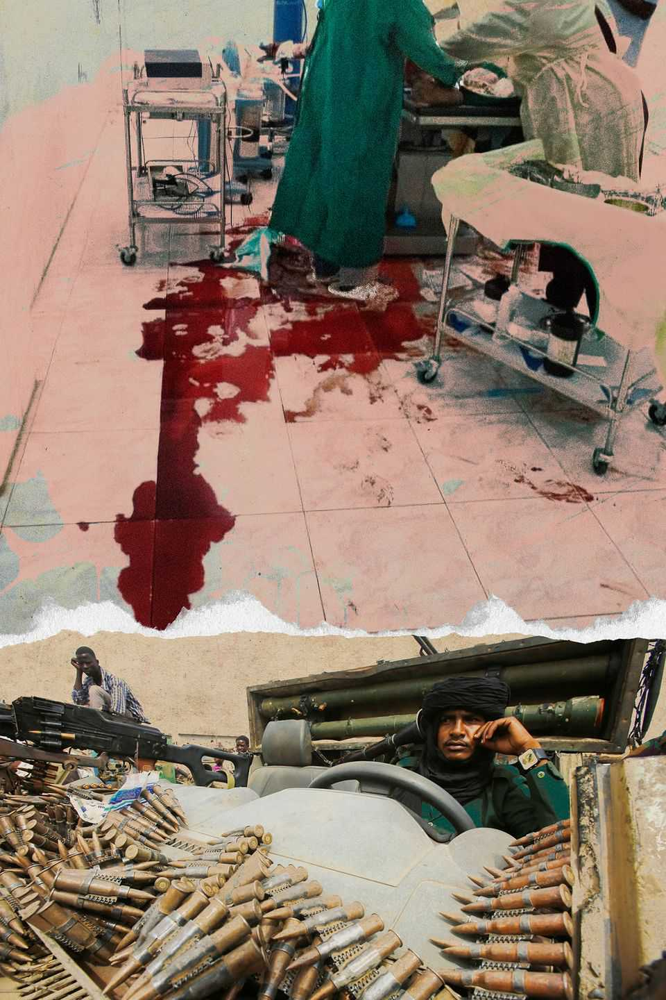
Far away, in the darkened schoolroom on the edge of the desert, Adam was listening to the peanut-seller explain how she would help him escape. Tell the guards you need to relieve yourself, she said, then meet me at the back of the building. He did as she said, walking unsteadily into the glaring sun. The woman guided him surreptitiously to her home, where he hid for 20 days.
Adam moved from house to house, mostly at night. Each time a person hid him, he’d ask them to try to find someone on the path ahead who might help. Sometimes a friendly driver would give him a lift. It took him a month to reach Khartoum.
He was desperate to find out what had happened to his friends, but was still afraid that the RSF would track him down. In the end he made a fake Facebook account, and found one of the hospital volunteers online. It’s Adam, he wrote. I’m alive.
Today, el-Fasher is a ghost town. Satellite images show grass growing on its market. Several staff from the Saudi hospital are still missing. The surviving members of the team are scattered. Many cannot sleep or are plagued by nightmares. One woman can’t stop dreaming about scrambling over a ditch full of dead bodies.
This summer I met Adam in the town where he’s been hiding. He was still nervous about RSF reprisals, and asked me not to name it.
“Those who survived, some are bitter,” he said. “When we were working, the world said we were heroes. But now we are forgotten.”
Every time he connects his phone to the internet it is flooded with messages from desperate colleagues: asking for medicine, a job or money. It overwhelms him. But he can’t switch off. He is a helper. If he doesn’t help, who is he?
In a strange way, he said, he and the others felt nostalgia for the siege. Not for the suffering, but for the purpose and unity they had back then, and the family they became.
“Even now, I feel as though I never truly left el-Fasher. My soul is still there,” said Adam. “The city is not destroyed as long as some of its people are alive.” ■
Names have been changed
Katharine Houreld is a journalist based in Rome. Previously she was East Africa bureau chief for the Washington Post. Hafiz Haroun is a Sudanese journalist
Illustrations by Michelle Thompson
Source images: EL Fasher Medical staff, Getty, AFP, UN, OCHA